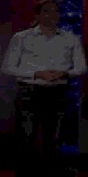

Harnessing the Power of Audio-Visual Collaboration for Video-based Person ReID
Project Home
üåü Highlights
- We propose a noval Dubbing-based audio-visual collaborative framework named DubberNet for video-based person ReID. To the best of our knowledge, we are the first to introduce audio for advancing this field.
- We propose an efficient multimodal learning and transfer mechanism that employs a Simple Injection (SI) module to efficiently fuse audio and a structurally consistent Simple Perception (SP) module to perceive knowledge.
- We propose a token-wise selective distillation strategy, in which a mask generator (MG) adaptively preserves informative tokens, allowing the student to inherit more robust knowledge from the teacher.
- Extensive experiments demonstrates that DubberNet outperforms the state-of-the-art methods on three standard benchmarks (MARS, iLIDS-VID, and PRID), achieving Rank-1 accuracy of 97.0\% and 96.0\% on MARS and iLIDS-VID, respectively.
üéß TED Audio-Visual Mini Gallery
|
|
|
|
|
|
|
 |


üîä Dubbing Dataset Mini Gallery (Audio Only)
| PID 0001 | ||
| PID 0003 | ||
| PID 0005 | ||
üì¶ Installation
conda create -n avreid python=3.10 -y
conda activate avreid
pip install -r requirements.txtüìÅ Data Preparation (TED)
data/
└── TED/
├── train/
├── query/
├── gallery/
├── train_audio/
├── query_audio/
‚îî‚îÄ‚îÄ gallery_audio/üöÄ Quick Start
# train
python train.py --cfg configs/av_reid_ted.yamlüìä Results
| Method | Venue | PRID R1 | PRID R5 | iLIDS R1 | iLIDS R5 | MARS R1 | MARS mAP |
|---|---|---|---|---|---|---|---|
| SCAN | TIP 2019 | 95.3 | 99.0 | 88.0 | 96.7 | 87.2 | 77.2 |
| AdaGraph | TIP 2020 | 94.6 | 99.1 | 84.5 | 96.7 | 89.5 | 81.9 |
| MGH | CVPR 2020 | 94.8 | 99.3 | 85.6 | 97.1 | 90.0 | 85.8 |
| MG-RAFA | CVPR 2020 | 95.9 | 99.7 | 88.6 | 98.0 | 88.8 | 85.9 |
| STRF | ICCV 2021 | - | - | 89.3 | - | 90.3 | 86.1 |
| PhD | CVPR 2021 | 96.6 | 97.8 | - | - | 88.9 | 86.2 |
| CTL | CVPR 2021 | - | - | 89.7 | 97.0 | 91.4 | 86.7 |
| MFA | TIP 2022 | 95.5 | 100.0 | 93.3 | 99.3 | 90.4 | 85.0 |
| MSTAT | TMM 2022 | - | - | 93.3 | 99.3 | 91.8 | 85.3 |
| AGW | TPAMI 2022 | 94.4 | 98.4 | 83.2 | 98.3 | 87.6 | 83.0 |
| SGMN | TCSVT 2022 | - | - | 88.6 | 96.7 | 90.8 | 85.3 |
| CAViT | ECCV 2022 | 95.5 | 98.9 | 93.3 | 98.0 | 90.8 | 87.2 |
| SINet | CVPR 2022 | - | - | 92.5 | - | 91.0 | 86.2 |
| FIND | TIP 2023 | - | - | 91.3 | 98.0 | 91.4 | 86.8 |
| RGCN | TCSVT 2023 | - | - | 90.2 | 98.5 | 91.1 | 86.5 |
| STFE | TMM 2024 | - | - | - | - | 94.5 | 89.5 |
| HASI | TCSVT 2024 | 96.1 | 98.7 | 93.3 | 99.6 | 91.4 | 87.5 |
| TMT | TITS 2024 | - | - | 91.3 | 98.6 | 91.8 | 86.5 |
| TF-CLIP | AAAI 2024 | - | - | 94.5 | 99.1 | 93.0 | 89.4 |
| TCViT | AAAI 2024 | - | - | 94.3 | 99.3 | 91.7 | 87.6 |
| 3DAPRL | TCSVT 2025 | 96.6 | 98.9 | 94.7 | 98.7 | 93.1 | 90.3 |
| PCPT | TIP 2025 | 96.4 | - | 92.9 | - | 90.9 | 86.6 |
| DS-VReID | IJCV 2025 | 95.5 | - | 94.0 | - | 92.3 | 87.6 |
| DubberNet-S | Ours | 96.6 | 100.0 | 96.0 | 100.0 | 97.0 | 90.5 |
Table 1. Comparison with state-of-the-art video-based person ReID methods on PRID, iLIDS-VID, and MARS datasets. Bold indicates the best.
üìú Citation
@inproceedings{YourAVReID2025,
title={Harnessing the Power of Audio-Visual Collaboration for Video-based Person ReID},
author={You, A. and Collaborators, B.},
booktitle={Proceedings of ...},
year={2025}
}üìÑ License
This repo is released under the MIT License (see LICENSE).
ü§ù Acknowledgements
We thank the contributors and dataset providers (including TED) for their support.
üìß Contact
- Maintainer: your.name (youremail@example.com)
- Issues: please open a GitHub Issue